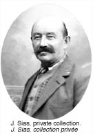

Panneau Terroir du Nord :
section 1 >
section 2 >
section 3
The Good Land Panel:
section 1 >
section 2 >
section 3
|
 Louis Jacquot (ci-dessus) et son frère Eugène (à droite) devant une cuisine de brousse bien équipée. Louis Jacquot (above) and his brother 'Gene' (right) at the helm of an elaborate bush kitchen. |
Originaires d’Alsace, en France, Louis et Eugène Jacquot furent mineurs d’abord dans le Klondike et plus tard sur le ruisseau Burwash, dans la région de Kluane, à l’ouest de Whitehorse. Ils se mirent aussi à faire du commerce et établirent un comptoir prospère sur les rives du lac Kluane, à un endroit qu’ils baptisèrent Burwash Landing en l’honneur du registraire minier local. Les frères Jacquot épousèrent tous deux des femmes autochtones et ils transformèrent Burwash en centre important de chasse et de pourvoirie pour la région de Kluane. On se souvient encore des merveilleux repas qu’ils préparaient. Le Whitehorse Star rapportait d’ailleurs qu’ « une des plus grandes surprises du Yukon était de retrouver dans cette contrée sauvage l’élégance de la cuisine française ». |
Louis and Eugène Jacquot were born in Alsace, France. They worked as miners in the Klondike and later on Burwash Creek in the Kluane area, west of Whitehorse. Trading began as a sideline but soon they had a prosperous trading post on the shores of Kluane Lake, at a place they named Burwash Landing after the local Mining Recorder. The Jacquot brothers both married First Nations women and turned Burwash into the major hunting and outfitting centre of the Kluane region. They are remembered for the wonderful meals that they provided; the Whitehorse Star reported that, "not the least of Yukon’s surprises was to find in the wilds the elegance of French cuisine." |
Mary Copper Joe était la fille du guide et chasseur tutchone du Sud bien connu Copper Joe. Elle épousa Louis Jacquot. Mary Copper Joe was the daughter of noted Southern Tutchone guide and hunter Copper Joe. She married Louis Jaquot. |
|
|
|||
Winter Panel: Section 1 >